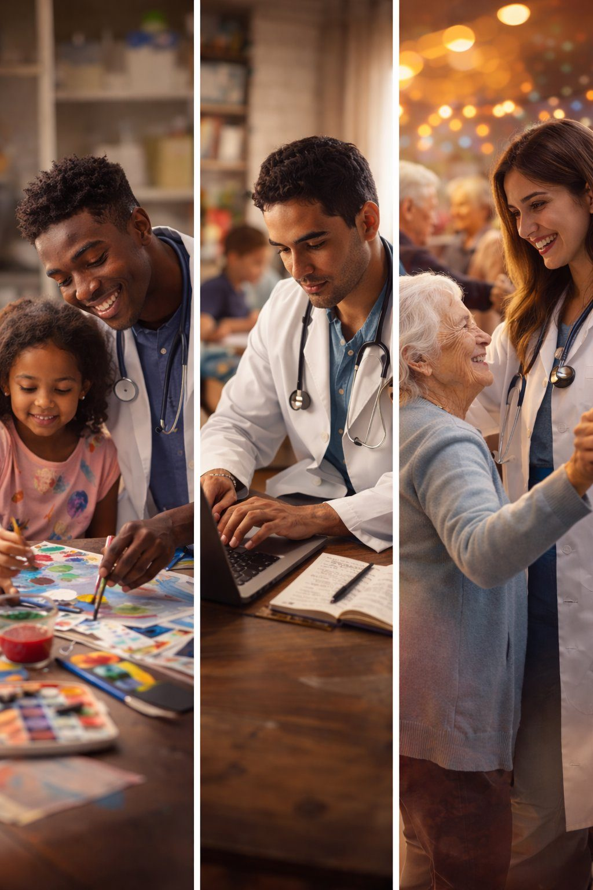
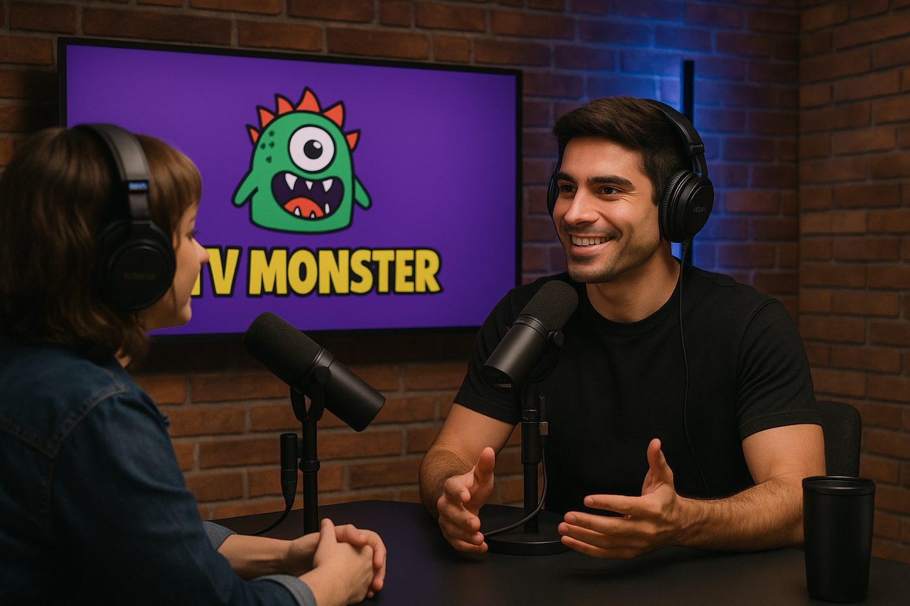
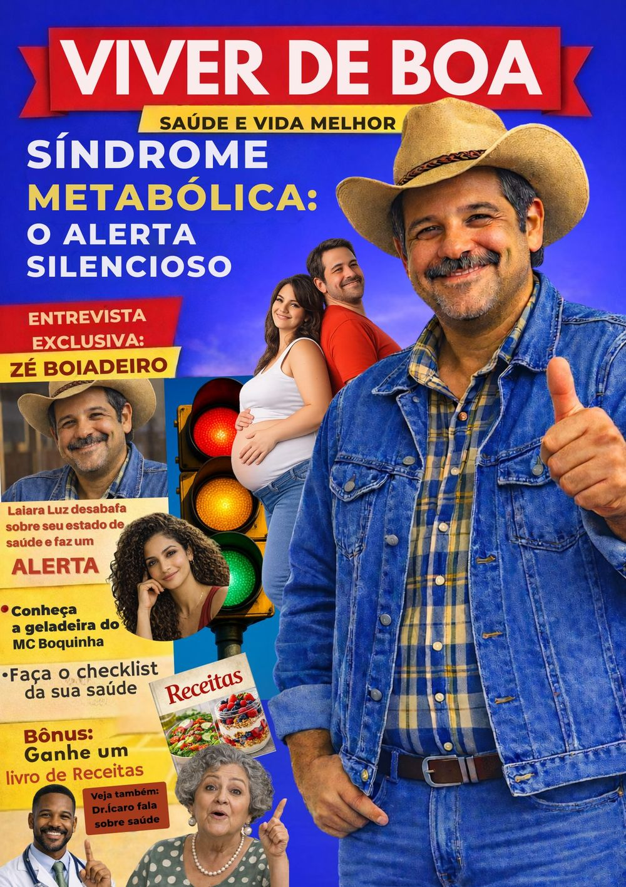
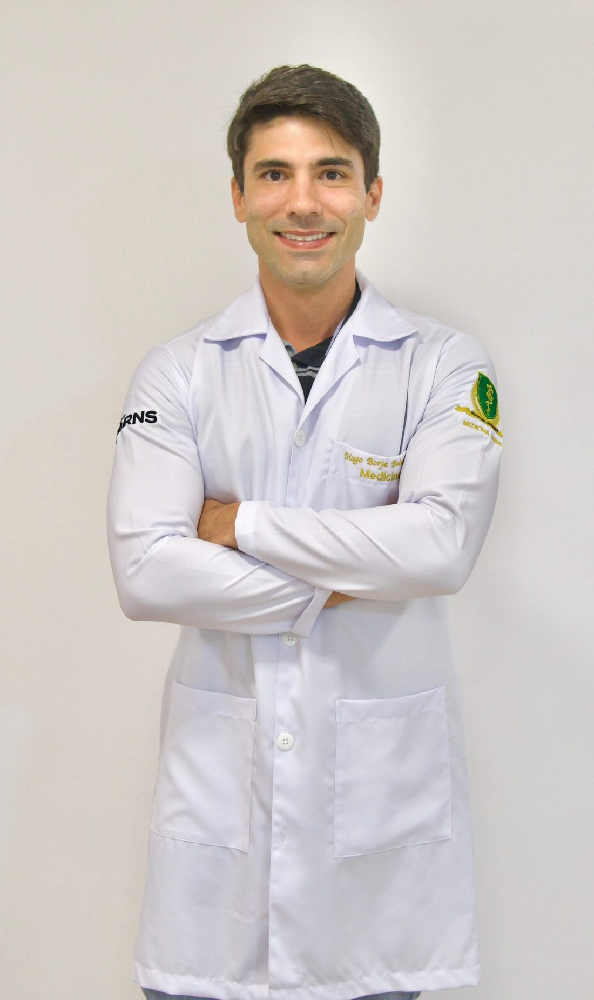
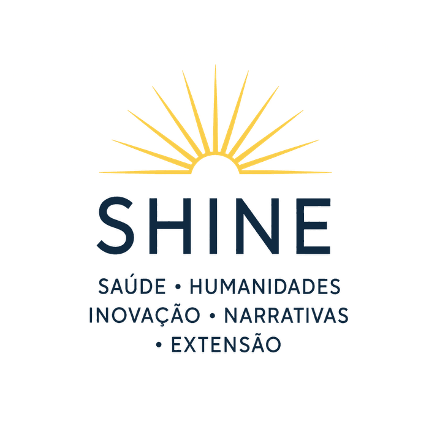

Saúde · Humanidades · Inovação
Narrativas · Extensão

SHINE é um instituto dedicado à convergência entre saúde, humanidades, inovação, narrativas e extensão. Vinculado ao ecossistema da Monster Initiative, nasce com a proposta de desenvolver projetos que ampliem a formação em saúde, fortaleçam a comunicação do conhecimento e promovam experiências capazes de unir rigor científico, sensibilidade humana e impacto social.
O SHINE parte de uma convicção simples e poderosa: os grandes desafios contemporâneos da saúde não se resolvem apenas com técnica. Eles exigem também escuta, empatia, imaginação, leitura crítica do mundo, sensibilidade ética e capacidade de traduzir conhecimentos complexos em linguagens que realmente alcancem as pessoas.
Em um tempo marcado por sobrecarga informacional, desumanização dos vínculos e novas formas de circulação do saber, torna-se cada vez mais necessário criar espaços que integrem formação, expressão, comunicação e pesquisa.
"É nesse território que o SHINE se posiciona. O instituto nasce para investigar, criar e comunicar na fronteira entre educação em saúde, humanidades, artes, cultura visual, narrativas públicas e inovação pedagógica."
Seu propósito é desenvolver iniciativas que aproximem o conhecimento científico da vida concreta, transformando conteúdos em experiência, informação em compreensão e formação em presença.
Uma visão em que a ciência não aparece isolada, fria ou distante, mas conectada à linguagem, à escuta, à ética e à imaginação. Uma visão em que comunicar bem também é cuidar.
Tornar o conhecimento mais vivo, mais acessível, mais humano e mais transformador.
Metodologia sólida e evidência como fundação de toda ação do grupo. Pesquisa como ponto de partida.
Escuta, empatia e repertório expressivo no centro de cada projeto. A experiência humana em primeiro lugar.
Conhecimento que alcança pessoas reais. Formação que transforma presença em mundo.
Cuidado, prevenção e conhecimento para transformar vidas. Saúde em sua dimensão humana e coletiva.
A pessoa em primeiro lugar. Escuta, empatia, ética e respeito à diversidade.
Novas ideias e linguagens para desafios reais. Criatividade que aproxima ciência, saúde e sociedade.
Histórias que mobilizam. Narrativas que aproximam saberes, experiências e pessoas.
Conhecimento para além dos muros acadêmicos. Universidade e comunidade transformando realidades.

O instituto atua como espaço de encontro entre diferentes modos de produzir sentido. Entre a pesquisa e a criação. Entre a análise e a sensibilidade. Entre o dado e a história. Entre o conhecimento técnico e sua tradução pública.
Nesse cruzamento, o SHINE busca desenvolver experiências capazes de formar profissionais mais atentos, fortalecer repertórios humanos e ampliar a potência social do saber científico.
Produção de conhecimento na fronteira entre ciência e expressão
Rigor científico como fundamento da experiência humana
Tradução do conhecimento técnico em narrativas vivas
Educação em saúde enriquecida por humanidades e arte
Oficinas, performances e experiências imersivas que ampliam o olhar dos profissionais de saúde e aproximam a cena do cuidado.

O SHINE se apresenta como uma plataforma de pensamento e ação voltada à construção de pontes. Entre universidade e sociedade. Entre ciência e linguagem. Entre cuidado e presença.
Aproximando o saber acadêmico da vida concreta e das necessidades reais
Transformando dados e evidências em narrativas que realmente comunicam
Formação técnica enriquecida por sensibilidade ética e escuta genuína
A forma como escolhemos transmitir o conhecimento é tão importante quanto o próprio

Produções audiovisuais e comunicação em saúde que traduzem o complexo em linguagem acessível, emocionante e transformadora.
Apresentação do SHINE para o ecossistema Monster e primeiros parceiros externos.
Gravações de podcast, ilustrações científicas e materiais editoriais de comunicação em saúde.
Primeiras experiências artístico-pedagógicas e projetos de comunicação em saúde em campo.
Simpósio ou festival integrando ciência, arte e humanidades. O SHINE em presença.

À frente do SHINE, Diogo Baleeiro reúne uma trajetória que integra arte, comunicação e medicina. Bacharel em Interpretação Teatral pela UFBA, pós-graduado em Jornalismo pela Faculdade Cásper Líbero e estudante de Medicina, atuou como apresentador em veículos como TV Bahia, Record Bahia, Jovem Pan e Rádio Globo Salvador, além de trabalhar no audiovisual, na produção cultural e como ator em teatro, séries e filme distribuído pela Netflix.
No SHINE, essa experiência se transforma em visão e liderança para projetos que unem saúde, humanidades e narrativas contemporâneas.

O SHINE se apresenta como uma plataforma de pensamento e ação voltada à construção de pontes. Pontes entre universidade e sociedade. Entre ciência e linguagem. Entre cuidado e presença. Entre formação técnica e formação humana. Entre o que sabemos e a forma como escolhemos compartilhar esse saber com o mundo.